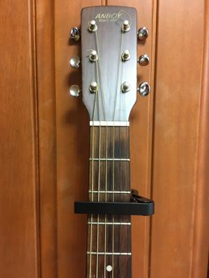
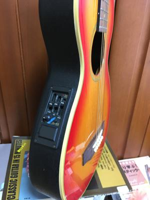

うるがいの話 ある日
最新: 夏休み
うるがいとは 前提知識です
カニの画像をクリックすると『うるがいの話』サイトを表示します
うるがい(ｳﾙｶﾞｲ urugai)とは、『もずくがに』の名前でとても大きくなります。
たながー（ﾀﾅｶﾞｰtanagaa）とは手長えびのことで、何種類かあり大きいのは車 エビぐらいになります。
ぶながー(bunagaa)とは、赤い髪の毛、赤い身体、そして身長は１ｍ２０ｃｍ ぐらい、川の蟹を食べているの目撃された。場所は沖縄県国頭郡大宜味村のと ある村僕の隣近所に住んでいる爺さんから、聞いた話です。
2021年07月22日 (木）
夏休み
17:19


１９７４年夏休みのある日、５８号線の護岸【ごがん】沿いで夜、那覇から遊
びに来た同じ学年の親戚にアコースティックギターを習った。その曲は吉田拓
郎の『夏休み』だった。夕方から習い始め、夜中帰る頃には弾けたと思う（さ
すが中学生、吸収力が並みでない）。弾き方をネットで探す、おや、やはり「
カポタスト」が必要なのか（説明省略）とアマゾンに注文、届く。４７年ぶり
に『夏休み』を弾く。感激、あの日図書館に貸出の紙に『親子で学べる子ども
のためのクラシックギターレッスン』が印刷されていたから、これも縁起（え
んぎ）か。ところで図書館から借りたギターの本によると、家のギターはエレ
アコ（マイクを仕込んで、スピーカーから音を出せるようにしたギター）とい
う種類であることが分かる。ふむふむ、上手になったらアンプでも買って演奏
してみよう。『夏休み』をユーチューブの模範演奏の画像を見ながら、繰り返
し演奏すると、弦を押さえる指が痛い（分かっているが）。楽譜が全くないマ
ンガ入りのギターの本『４０歳からのハローギター』を読む（予約で借入する
場合、現物は借りて初めて分かる！）と『指はいつまで痛いのだろうか』で
プロのギタリストであっても指は痛いのだ。そう、ギターを弾くと指は痛い。
慣れないとか、指先が硬くなっていないとか、そういうものではないのだ。
プロのギタリストでも指は痛いと言ったけれど、それを言うならバイオリン奏
者なんて、もっと痛いだろう。
おお、そうなんだ。ちなみギターを教えてくれた親戚は、とある銀行の役員を
している（ネットで確認したがさすがに老いを感じる）。巷では今日から夏休
み入っているが、この台風の天気ではさぞかし面白くないかも、明日は台風が
方向を変えるため、さらに天気が悪くなる模様。